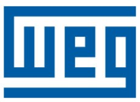

Pedro Teixeira's Resume
Summary

- Well organized and dedicated person who finds gratification in achieving goals
- Flexible and with a curious mindset, keen to learn and develop new skills; quick adapter to organizational changes
- Very social person who cultivates a positive relationship with colleagues and aims for customer satisfaction and long-lasting business relationships
- Very curious about the IT world, keen to learn and start a career in that limiteless world
Education

M.Sc. Electrical and Computers Engineering
Faculdade de Engenharia - University of Porto
Field: Energy
Specialization: Renewable Energy
Work Experience

Project Manager
WEG | September 2021 - present
- Management of multiple medium/large scale Projects, ensuring the appropriate and accurate facilitation of project goals, schedules, scope and deliverables
- Managed several Electric Motors Projects ~3,5M€ annually
International Sales and Application Engineering Team
WEG | March 2021 - September 2022
- Technical analysis of motor and project specifications in order to find the best electrical and mechanical solution that suits the requirements
- Participation in handover meetings with customer and PM team, on the Order Stage
Regional Sales Manager - HV and MV Switchgear
Efacec | May 2018 - March 2021
- Analysis of customer's technical requirements, elaboration of Commercial B2B Offers and its follow up

Sales Specialist - HV Products
Siemens | March 2017 - March 2018
- Offers elaboration for national and international markets and contract management
Skills
Hard Skills
- MS Office: *****
- SAP: ***
- HTML: *
Soft Skills
- Communication: *****
- Teamwork: *****
- Negotiation: ****
- Autonomy: ****
- Self Motivation: ****
- Time management: ****
Languages
- Portuguese: *****
- English: *****
- French: ***
- Spanish: ***
Certifications

Professional Scrum Product Owner I - PSPO I
Scrum.org
Certificate no. 1041394
Contact Me